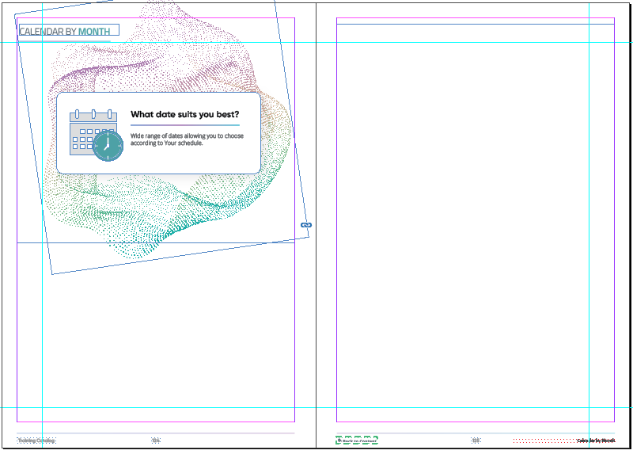
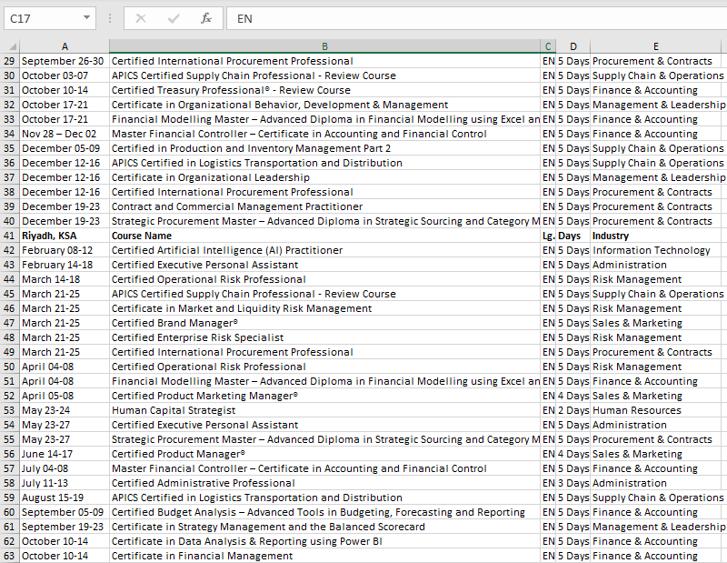
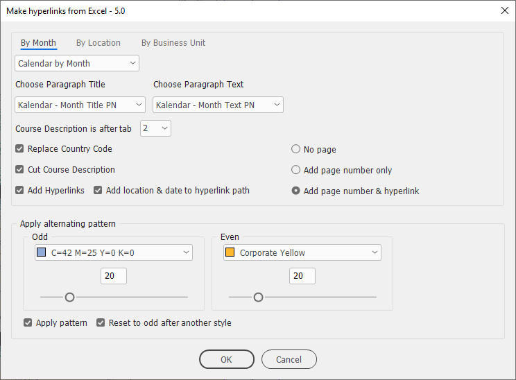
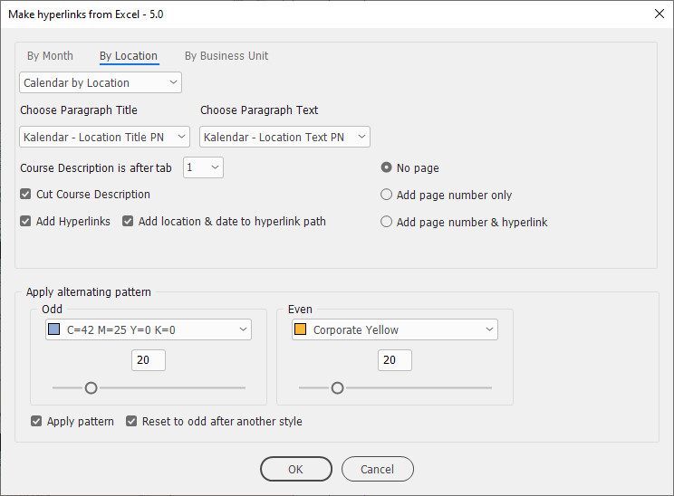
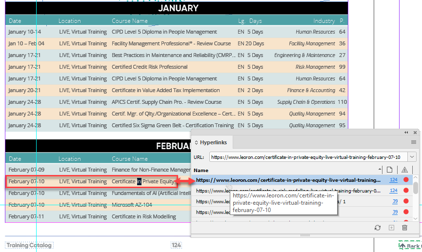
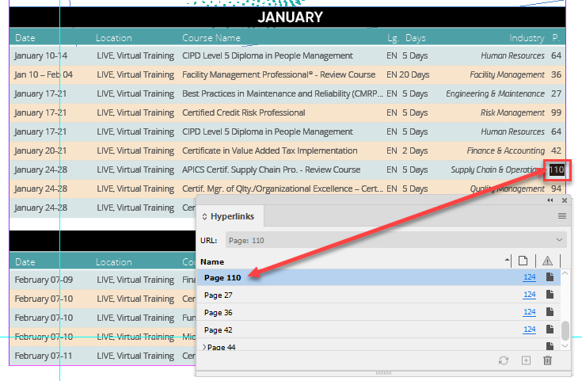
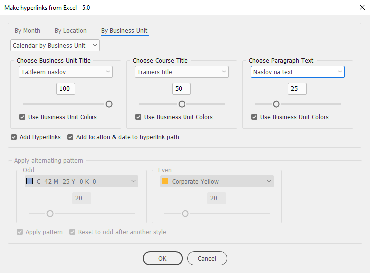
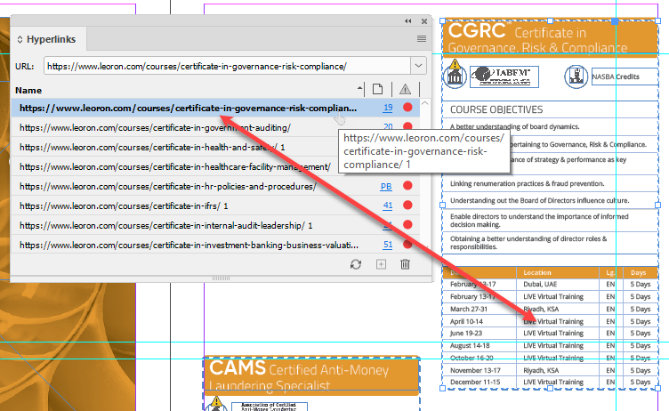

Make hyperlinks from Excel
This is a complex script for making hyperlinks in InDesign using Excel workbooks as a data source. It was written according to the requirements of my client so it won’t work for you as it is. I post it to show you what is possible to do by scripting and how to achieve it. You can use my script as a starting point for your project, or study the code to understand my approach.
Before
We have only a blank document created from a template with an empty text frame selected (to be more exact, a chain of threaded text frames).

And an Excel spreadsheet with the information to be used for the creation of links.

After
The script has three tabs for creating three kinds of hyperlinks: sorted by
Month

Location

Here two types of hyperlinks are created:
Web hyperlinks

Hyperlinks to pages

Business unit

Here two types of hyperlinks to groups of items are created:

As far as I remember, it takes a little more than an hour to produce all three types of hyperlinks in the catalog: 40,000+ in total.
Click here to download the script.